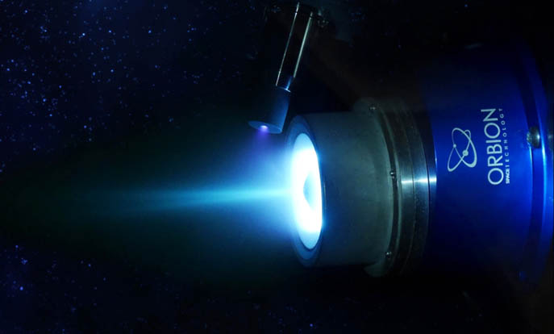
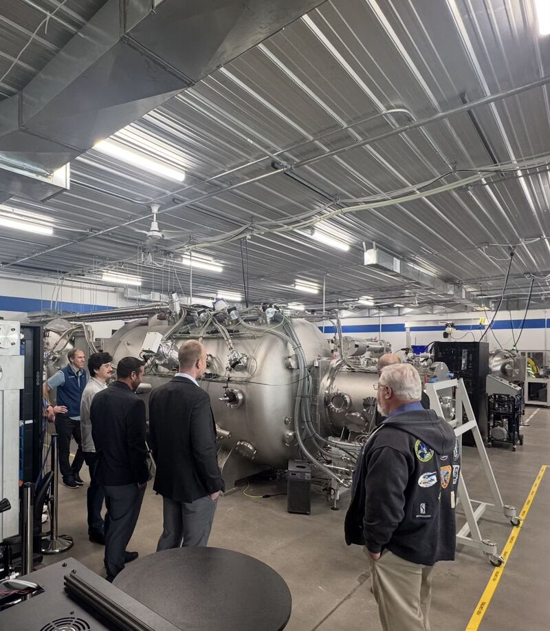

Testing and analyzing Hall-effect thrusters for next-generation electric propulsion.
I supported Orbion's Propulsion R&D Team in the design and execution of vacuum-chamber testing for
xenon- and krypton-fueled Hall-effect thrusters. This work contributed to the development and performance
qualification of a new electric-propulsion thruster design.
My responsibilities crossed test engineering and software engineering: I helped plan and run a full-scale
krypton performance test, then analyzed large telemetry datasets to investigate failed ignitions.
02 · Technical approach
Running vacuum-chamber tests to characterize thrust and specific impulse of a new thruster design.
Test engineering
Designed and executed vacuum-chamber tests comparing Hall-effect thruster performance on krypton with
the more commonly used xenon propellant.
Software engineering
Developed a Python signal-processing tool to review more than 1,000 thruster ignitions, highlight
anomalies, and support investigation of failed-ignition behavior.
03 · Photos
Hall-effect thruster operation and vacuum-test facilities.

Orbion Hall-effect thruster operating with xenon propellant.

Vacuum-chamber facility used for electric-propulsion development and performance testing.
04 · Results
Connected hands-on test execution with faster post-test failure analysis.
Test outcome
Executed a full-scale test campaign to characterize thruster performance using krypton propellant.
Analysis outcome
Improved anomaly review across large telemetry datasets and helped identify causes of failed ignitions.